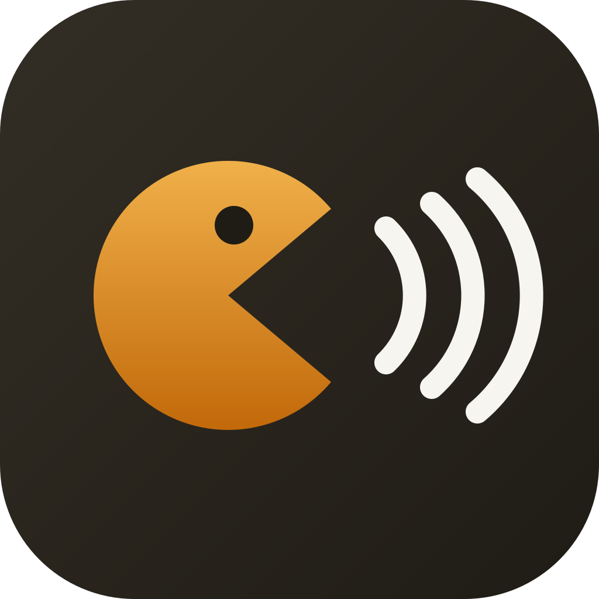

Pair this phone with Yap
Connecting to Yap on your PC…
Check this code on your PC:
then press Allow.
In Yap on your PC, open Settings → Phone → Pair a phone, then scan the code with this phone's camera.
Ask Yap anything
Type a question, or tap the mic and say it. To talk it through out loud, tap the waveform: Yap answers, then listens again.
Keep this page open. Your headset works as the mic and speaker.
Earlier messages are in Chat on your PC.